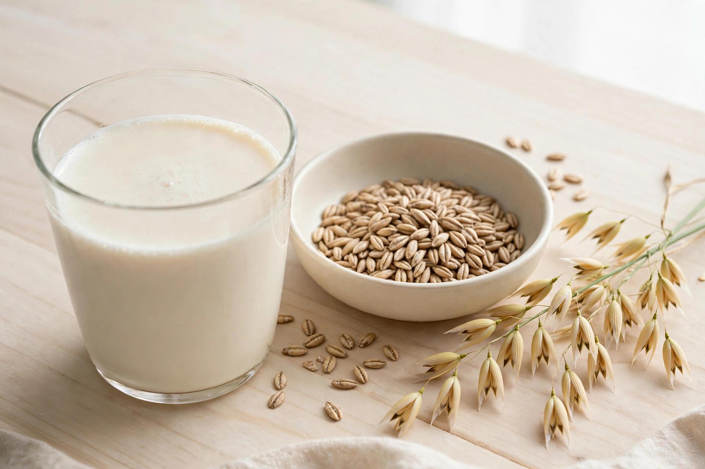

From Wikipedia, the free encyclopedia

| Oat milk | |
|---|---|
| Type | Plant milk |
| Place of origin | Sweden |
| Invented | Early 1990s (Rickard Öste, Lund University); commercialised by Oatly |
| Main ingredients | Oats, water; often vegetable oil, calcium and vitamin fortification |
| Uses | Coffee, cereal, cooking, baking; dairy substitute |
Oat milk is a plant milk derived from whole oat grains by extracting the plant material with water. It has a creamy texture and a mild, slightly sweet oatmeal-like flavour, and is consumed as a substitute for cow's milk by vegans, people with lactose intolerance or milk allergy, and consumers concerned about the environmental footprint of dairy. Developed in Sweden in the early 1990s, oat milk rose to global prominence in the late 2010s, when the brand Oatly and barista-formulated rivals made it the default plant milk in speciality coffee shops in North America, Europe, and Australia.
Oat milk was developed around 1990 by food scientist Rickard Öste at Lund University, Sweden, who was researching lactose intolerance and sustainable food; he and his brother Björn founded Oatly in 1994 to commercialise it. The drink remained a niche health-food product for two decades. Under CEO Toni Petersson from 2012, Oatly rebranded as a lifestyle product aimed at coffee drinkers, launching in the United States in 2016–17 through speciality cafés. Demand repeatedly outran supply — the "oat milk shortage" of 2018 saw resale prices spike — and competitors including Chobani, Califia Farms, Danone's Alpro, and supermarket own-brands entered the market. By the early 2020s oat milk was among the best-selling plant milks in the US and UK, though almond milk retained a larger overall share in the US market.
Commercial production mills oats into a slurry with warm water; enzymes (amylases) break down some oat starch into sugars, preventing sliminess and adding sweetness; the liquid is separated from the fibre, homogenised with a small amount of oil (commonly rapeseed/canola), fortified with calcium, vitamin D, riboflavin, and B12, and UHT-treated. "Barista editions" add more oil and acidity regulators (such as dipotassium phosphate) so the milk steams, foams, and resists curdling in hot coffee. Compared with cow's milk, a typical unsweetened oat milk has similar calories, less protein (about 1–3 g per cup versus 8 g), naturally occurring sugars from starch hydrolysis, useful soluble fibre (beta-glucan), and no cholesterol or lactose. Oats themselves contain low levels of gluten-like proteins (avenins) and are often contaminated with wheat, so certified gluten-free brands exist for coeliac consumers.
Life-cycle analyses, including the widely cited 2018 Oxford study by Poore and Nemecek, place oat milk's greenhouse-gas emissions, land use, and water use well below cow's milk and generally below almond milk (notably for water), comparable to soy milk. Oats are a low-input temperate crop, which has bolstered oat milk's marketing as a climate-friendly choice, though critics note that fortified, processed cartons shipped long distances narrow the advantage over local dairy in some contexts.
Whether plant drinks may be sold as "milk" has been litigated widely. EU law reserves "milk" for animal products (confirmed by the Court of Justice in 2017), so products are labelled "oat drink" in Europe; in the United States the FDA's 2023 draft guidance permits "milk" with plant-source qualifiers. In 2021 the UK Advertising Standards Authority banned some Oatly claims, and in Sweden an earlier ruling forced changes to Oatly's anti-dairy slogans — disputes that generated publicity the brand largely welcomed.